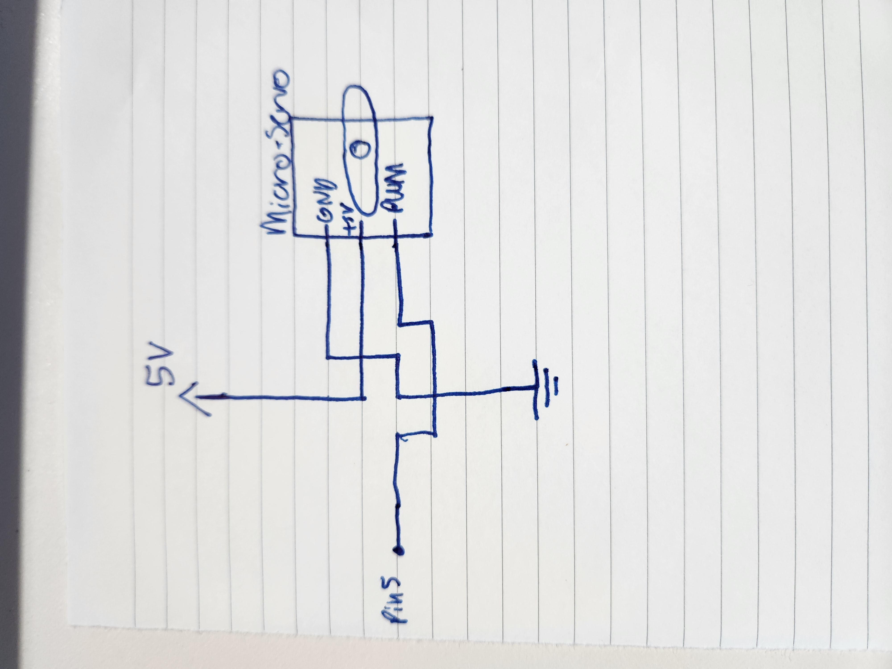

#include < Servo.h>
Servo myservo; // create servo object to control a servo
// twelve servo objects can be created on most boards
int pos = 0; // variable to store the servo position
void setup() {
Serial.begin(9600); // initialize serial communications
Serial.setTimeout(10); // set the timeout for parseInt
myservo.attach(5); // attaches the servo on pin 5 to the servo object
}
void loop() {
if (Serial.available() > 0) { // if there's serial data
int inByte = Serial.read(); // read it
Serial.write(inByte); // send it back out as raw binary data
myservo.write(inByte); // tell servo to go to position
delay (15); // let servo catch up with 15 millisecond delay
}
}
var serial; // variable to hold an instance of the serialport library
var portName = 'COM10'; //rename to the name of your port
var inData;
function setup() {
serial = new p5.SerialPort(); // make a new instance of the serialport library
serial.on('list', printList); // set a callback function for the serialport list event
serial.on('connected', serverConnected); // callback for connecting to the server
serial.on('open', portOpen); // callback for the port opening
serial.on('data', serialEvent); // callback for when new data arrives
serial.on('error', serialError); // callback for errors
serial.on('close', portClose); // callback for the port closing
console.log("muffin");
serial.list(); // list the serial ports
serial.open(portName); // open a serial port
createCanvas(1200, 800);
}
// get the list of ports:
function printList(portList) {
// portList is an array of serial port names
for (var i = 0; i < portList.length; i++) {
// Display the list the console:
print(i + " " + portList[i]);
}
}
function serverConnected() {
print('connected to server.');
}
function portOpen() {
print('the serial port opened.')
}
function serialError(err) {
print('Something went wrong with the serial port. ' + err);
}
function portClose() {
print('The serial port closed.');
}
function serialEvent() {
if (serial.available()) {
//inData = serial.read();
inData = mouseY;
console.log("got back " + inData);
}
if (serial.available()) {
let maybeNumber = parseInt(serial.readLine());
if (!isNaN(maybeNumber)) {
inData = maybeNumber;
console.log(inData);
}
}
}
function keyPressed() {
console.log("writing key");
serial.write(key);
}
function draw() {
background(0);
fill(255);
//text("inData: " + inData, 30, 30);
text("inData: " + mouseY, 30, 30);
let mapMY = map(mouseY, 0, 744, 0, 180);
serial.write(mapMY);
}
function rotate() {
background(0);
fill(255);
text("inData: " + inData, 30, 30);
elipse(300, 300, 20, 20);
translate(mouseX, mouseY);
}
Calculations: V = I * R
White lights with a voltage drop of 3.3, and we have three lights per segment 12-3*3.3 = 2.1V Ohms law for one segment for I V = I*R I = R/V Resistance is 181 on each segment as seen on led strip I = 181/2.1 = 86.2 Find full I for all of the LED strip, each segment is 5cm and the strip the 5meters, so there are 100 5cm segments Transistor datasheet, make sure maximum draw is less than 32amps